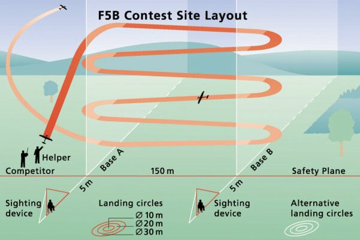

F5B is a multitask event for radio-controlled electric gliders. The three tasks that have to be completed in one flight are Distance, Duration and Landing.
Distance
You have 200 seconds (3 min 20s) from the moment the model is launched to complete as many 150m "legs" as possible. Each completed leg scores 10 points. You can use the motor to climb up to 10 times, but all legs must be completed with the motor off.
Duration
At the end of the distance task you fly for a further 600 seconds (10 minutes). Each second airborne scores 1 point, but 3 points are deducted for every second of motor use. You also lose a point for every second you fly in excess of the 10 minutes.
Landing
The flight ends when the model comes to rest on the ground. A landing bonus of 30 points is added if the nose is within 5m of a pre-determined spot, 20 points within 10m, and 10 points within 15m.

Equipment rules
When you eventually want to win a UK League event, or get a spot on the UK team, your model and equipment will need to fit around the following rules as laid down by the CIAM and FAI:
- Minimum model weight without battery: 1000g
- Maximum 10s (no parallel) Lithium Polymer cells
- Minimum battery weight: 400g
- Energy used in one flight must be stored by a logger; maximum 1750 W·min. Anything over results in a deduction of 1 point per 3 W·min over the limit
- Minimum surface area: 26.66 dm²
- Maximum surface loading: 75g/dm²